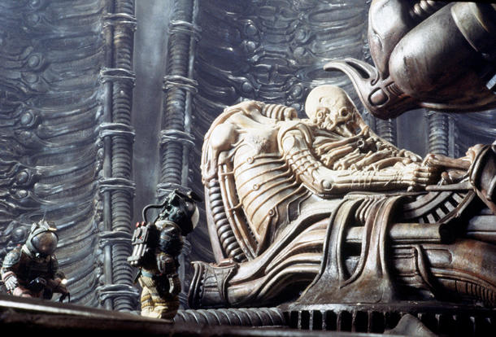

La nave Nostromo se dirige a la Tierra tras una misión convencional de extracción minera con sus tripulantes en estado de hibernación. Sin embargo, el ordenador principal decide despertarlos antes de tiempo ante la recepción de una señal desconocida. Obligados por las normativas de la compañía para la que trabajan, aterrizan en un planeta desértico donde comienzan a descubrir una serie de sucesos sorprendentes. La expedición acaba con una criatura adherida al rostro de uno de los miembros del equipo, mientras descifran que la señal recibida era una señal de advertencia. 1979 - DIRIGIDA POR Ridley Scott - PROTAGONIZADA POR Sigourney Weaver, Tom Skerritt, John Hurt, Harry Dean Stanton, Yaphet Kotto, Veronica Cartwright e Ian Holm.
Argumento
Reseña
La inmensidad del espacio. Una gigantesca nave se desplaza lentamente. Se dirige al Tierra con una carga de 20 millones de toneladas de mineral. Enormes pasillos e innumerables estancias vacías. Parece desierta, abandonada. De pronto comienza a despertar, cobra vida poco a poco. Y con ella sus siete tripulantes.
Con este magistral comienzo, sin una sola línea de diálogo en 10 minutos, ya tenemos los mimbres para una de las mejores películas de ciencia ficción y terror de la historia. Porque, ante todo, es la sutil y eficaz presentación de la que es la verdadera protagonista de la cinta: la nave Nostromo. Inmensa, fría, laberíntica. Inabarcable y a la vez claustrofóbica. Una prisión dentro de otra prisión aún mayor que es el espacio exterior.
Uno de los grandes aciertos de Alien es colocar a unos personajes reales, trabajadores al servicio de una corporación, preocupados por sus salarios, sus horas (en este caso años…) de trabajo. Nada de héroes o fornidos marines Scott, en un alarde de economía narrativa, los retrata uno a uno con sus respectivas interrelaciones en apenas unos diálogos al principio del film. Y ninguno pierde coherencia hasta el (su) final.

Con el paso del metraje, sin apenas darnos cuenta, ya formamos parte de la tripulación, y conocemos la personalidad de Brett, Dallas, Kane, Parker, Ash, Lambert y Ripley como si fueran compañeros en nuestro trabajo. Y hasta podríamos describir muchas de las estancias de la nave con los ojos cerrados.
La película ofrece un ritmo impecable: conocemos a los protagonistas y su contexto en apenas media hora (que operan con procedimientos realistas, me encanta que las películas de ciencia ficción no nos tomen a los espectadores por tontos y expliquen por qué suceden o no las cosas), asistimos a la inquietante presentación del problema y nos pasamos la última hora aterrorizados al ver que la presa se convierte en implacable cazador.
El alien es una criatura que evoluciona rápidamente, que acaba con sus víctimas y las caza, que no le interesa pactar con otra especie ni dominarla, sino más bien extinguirla, desaparecerla bajo un instinto de supervivencia.La desesperación y el encierro le dan una noción lúgubre al espectador, donde al giro de cada pasillo puede encontrar la muerte. La música tiene que un peso que acentúa el misterio y la incertidumbre.
En una época en la que no existían los efectos digitales, la imaginación de los técnicos para lograr que todo pareciera real, a base de maquetas, tipos disfrazados y trucos de lo más inverosímil, resultó tan convincente que, aún hoy, casi 40 años después, siguen dando miedo (se llevaron el Oscar aquel año).
La banda sonora logró una sorprendente partitura que fluye con pasmosa naturalidad de los acordes más inquietantes a una bellísima melodía.

Lo cierto es que nada volvió a ser igual tras este film.Y, por supuesto, su influencia sobre films posteriores es incuestionable.Pero el verdadero logro de Alien es que consiguió aunar el talento de un puñado de geniales artistas para completar una experiencia cinematográfica inolvidable.
Otras reseñas
¿Tenés ganas de leer otras reseñas? Te dejamos otras páginas para que puedas ver más información sobre la película: